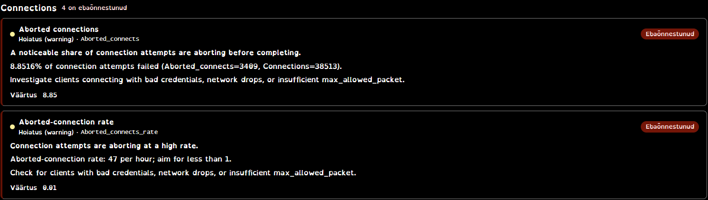

MariaDB ühendused katkesid endiselt
Nextcloudi andmebaasivaade näitas katkestatud ühenduste hoiatusi. MariaDB teenuselogi kontrollis kordusid teated Aborted connection ja Got an error reading communication packets.
Kasutaja käivitas järgmise lugemiskäsu:
sudo journalctl -u mariadb --since "24 hours ago" --no-pager |
grep -Ei 'access denied|aborted connection|timeout|error' |
tail -n 60Salvestatud väljundis korduvad hoiatused 17. novembril kell 01.50–02.04, valdavalt Modoboa ühendustel; leidub ka Amavise ühendus. See on logikontrolli tulemus, mitte põhjusdiagnoos.
Seis: lahendamata. Ühenduse katkestaja, täpne põhjus ja püsiv parandus jäid kinnitamata. Andmebaasivaate üldised soovitused kontrollida mandaate, võrku või max_allowed_packet väärtust ei tõenda ühtegi neist põhjustest.
